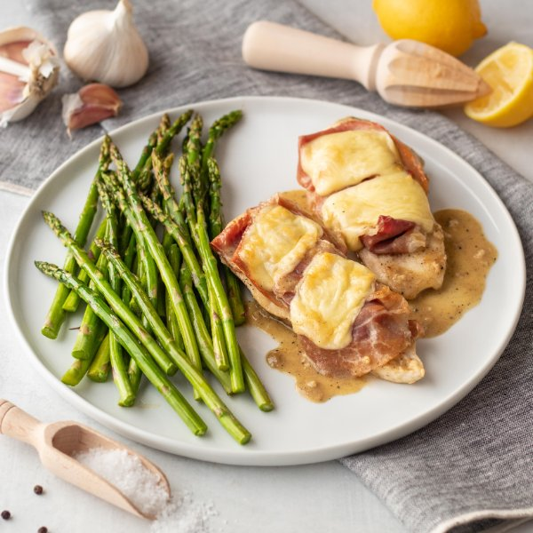

Chicken Cordon Bleu with Lemon-Dijon Sauce & Roasted Asparagus

Total Time
35 min
Nutrition (per serving)
628.9 kcalCalories
64.7 gProtein
23 gCarbs
31.5 gFat
Full nutrition table
| Calories | 628.9 kcal |
| Total fat | 31.5 g |
| Saturated fat | 12.6 g |
| Trans fat | 0.4 g |
| Cholesterol | 201.8 mg |
| Sodium | 1318.2 mg |
| Carbohydrates | 23 g |
| Fiber | 3.4 g |
| Sugars | 5.1 g |
| Protein | 64.7 g |
| Potassium | 935.2 mg |
| Calcium | 196.3 mg |
| Iron | 5.2 mg |
| Vitamin A | 1191.8 IU |
| Vitamin C | 12.2 mg |
| Vitamin D | 10.6 IU |
Cookware
Ingredients
- 2 small bunchesasparagus
- 1 ½ lbchicken breasts, boneless skinless
- 8 fl ozchicken or vegetable broth
- 2 clovesgarlic
- 1lemon
- ½ (8 oz) blockmozzarella cheese
- 16 slicesprosciutto
- all-purpose flour
- black pepper
- butter, unsalted
- Dijon mustard
- extra virgin olive oil
- salt
Steps
- Preheat oven to 425°F.
- Wash, dry, and snap or cut off the woody ends of the asparagus. Place on a large baking sheet pan, drizzle with oil, and season with salt and pepper.2 small bunches asparagus
2 tbsp extra virgin olive oil
½ tsp salt
⅛ tsp black pepper - Place baking sheet in the bottom half of the oven and bake until tender-crisp, 10-15 minutes.
- Meanwhile, pat the chicken dry with paper towels and place on a cutting board. Holding a knife parallel to the cutting board, cut the chicken in half horizontally to form thin cutlets. Season the cutlets with salt and pepper on both sides.1 ½ lb chicken breasts, boneless skinless
1 tsp salt
½ tsp black pepper - Preheat broiler on high, leaving the asparagus in the bottom of the oven until it is finished cooking.
- Place flour in a shallow dish; lightly dredge the chicken in the flour, shake off excess, and place on a plate.½ cup all-purpose flour
- Wash and juice the lemon into a small bowl. Add broth, Dijon, and flour; whisk until smooth.1 lemon
8 fl oz (1 cup) chicken or vegetable broth
4 tsp Dijon mustard
2 tsp all-purpose flour - Preheat a large ovenproof skillet over medium-high heat.
- Peel and mince garlic.2 cloves garlic
- Add butter to the skillet and swirl to coat the bottom.2 tbsp butter, unsalted
- Cooking in batches if necessary, add breaded cutlets to the skillet and cook until lightly golden, about 2 minutes per side. Remove to a plate.
- Meanwhile, slice the cheese.½ (8 oz) block mozzarella cheese
- Add garlic to the skillet and cook until fragrant, about 30 seconds. Add broth mixture and whisk, scraping up the browned bits, until mixture thickens slightly, about 1 minute.
- Return the cutlets to the skillet. Place two slices of prosciutto on each cutlet and top with cheese. Place skillet in the oven and broil until cheese is melted and golden and chicken is cooked through, about 3 minutes.16 slices prosciutto
- To serve, divide chicken cutlets, sauce, and asparagus between plates. Enjoy!